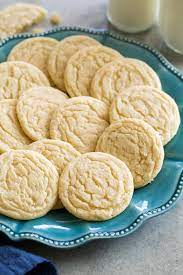

Sugar Cookies Recipe

Description:
Sweet and soft, these lovely cookies make the perfect desert or light snack! Using only
a few ingredients and 30 minutes total, a few dozen of these delicious cookies can be baked
for any event or as any snack.
Ingredients:
- Flour
- Baking Soda
- Baking Powder
- White Sugar
- Softened Butter
- Vanilla Extract
- Egg
Steps:
- Preheat the oven to 375 degrees F (190 degrees C).
- Stir together flour, baking soda, and baking powder in a small bowl.
- Cream butter and sugar until smooth in a large bowl. Beat in egg and vanilla. Gradually blend in dry ingredients. Roll rounded teaspoonfuls of dough into balls, and place onto ungreased cookie sheets.
- Bake in the preheated oven until golden, 8 to 10 minutes. Let stand on cookie sheet for 2 minutes before removing to cool on wire racks.
And there you have it! Perfect, sweet snacks for anyone.
Home